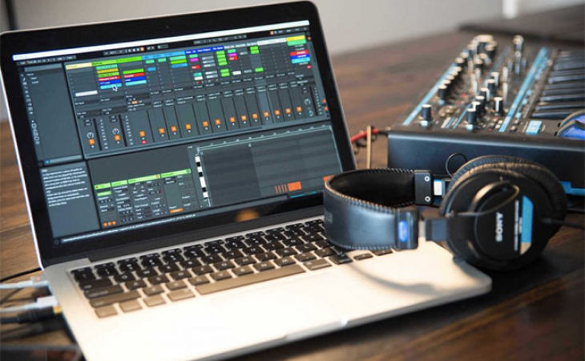
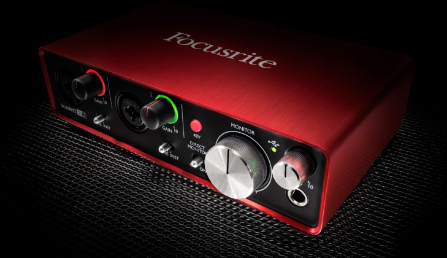
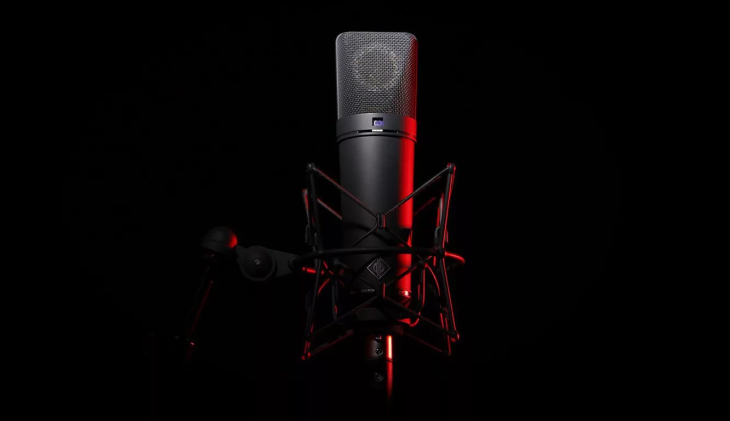

Оборудование
В современных студиях звукозаписи, а в нашем случае конкретно студиях для записи озвучки, имеется несколько главных элементов оборудования, которые мы и разберем на этой странице.
Компьютер
Обеспечивать стабильную и быструю обработку аудиофайлов могут компьютеры с достаточной производительностью. Хорошей мощностью и со свободным местом на винчестере. Четырёхядерного процессора вполне хватит. Основной принцип выбора – чем больше ядер, тем лучше, ведь во время записи на процессор ложится нагрузка от сразу нескольких работающих плагинов. ОС особой роли не играет, потому что большая часть софта и оборудования работает как с ОС Windows, так и с операционной системой macOS. . Жёсткие диски лучше брать SSD, которые отличаются высокой степенью производительности и быстродействием.
Аудиоинтерфейс
Студия звукозаписи не обойдётся без специальной звуковой карты. Её ещё называют – «аудиоинтерфейс». Она непосредственно отвечает за качество звука, который входит или выходит из ноутбука. Тут может возникнуть вопрос, зачем нужно это устройство, если в компьютерах имеются свои звуковые карты? Ответ простой, встроенные карты ориентированы лишь на базовые функции. Они обеспечивают просмотр видео, прослушивание музыкальных файлов, воспроизведение звукового сопровождения игр или стандартных сигналов операционной системы.
Студийный микрофон
Что касается микрофонов, иногда возникают вопросы, можно ли использовать в студии обычный динамический микрофон, который используется на концертах в «живых» выступлениях. Ответ – нет! Для студийных записей используются специальные конденсаторные микрофоны, которые, в отличие от обычных, имеют встроенные усилители и большие диафрагмы. Благодаря такой конструкции они очень чувствительны, улавливают малейшие звуковые колебания.
Микрофон - важнейщая часть оборудования, к его выбору нужно подойти с максимальной ответственностью.